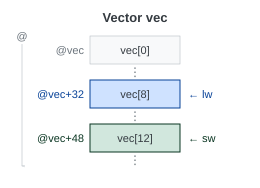
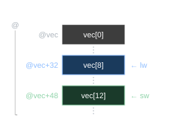

Tema 2: Instruccions i tipus de dades bàsics
2.1 Introducció a l’ISA de RISC-V
A l’assignatura IC, s’estudia en detall el disseny d’un computador simple, analitzant la relació entre el llenguatge màquina i el disseny a nivell de circuits lògics digitals. A EC, s’aprofundeix en el llenguatge d’assemblador i s’estudia la relació entre aquest i un llenguatge d’alt nivell.
La taula d’EC 1 recull les especificacions més rellevants de les eines i llenguatges d’EC.
2.1.1 Instruction Set Architecture, ISA
S’anomena conjunt d’instruccions, repertori d’instruccions o joc d’instruccions (Instruction Set Architecture, ISA) d’un processador, a l’especificació de la interfície entre el maquinari (hardware) i el programari (software). La ISA, en tant que interfície, constitueix un contracte entre els fabricants del maquinari i els de programari. Al llarg dels anys, el fabricant d’un processador pot introduir en el seu disseny successives millores, a fi d’augmentar-ne el rendiment. Però s’ha demostrat que comercialment resulta crític mantenir la compatibilitat dels nous processadors amb els programes existents, i per a això cal que el nou disseny respecti punt per punt totes les especificacions de la ISA.
La ISA descriu tècnicament tots els aspectes del processador visibles al programador d’assemblador, incloent-hi:
- El format de les instruccions que el processador pot executar.
- La manera com l’execució de cada instrucció afecta l’estat del processador.
- Els tipus de dades suportats.
- Els registres.
- L’arquitectura i gestió de la memòria.
- El model d’excepcions i interrupcions.
Aquests aspectes constitueixen la matèria principal d’estudi d’EC.
El terme Instruction Set pot induir a pensar que la ISA es limita al conjunt d’instruccions. Però no és així: la ISA descriu tots els aspectes del processador visibles al programador d’assemblador.
Els termes arquitectura de computadors i estructura de computadors s’usen sovint com a sinònims, però tenen matisos diferenciats [1]:
- Arquitectura de computadors: Els aspectes visibles al programador: el conjunt d’instruccions, els tipus de dades, els modes d’adreçament, els registres accessibles i el model de memòria. En definitiva, allò que defineix la ISA.
- Estructura de computadors: La implementació interna que fa possible l’arquitectura: la unitat de control, l’ALU, la memòria cau, els busos i la microarquitectura en general. És el com s’implementa el què que defineix l’arquitectura.
A la pràctica, tots dos aspectes s’estudien de forma conjunta, ja que les decisions d’arquitectura condicionen l’estructura i viceversa. El nom de l’assignatura, Estructura de Computadors, reflecteix l’èmfasi en la implementació, però el seu contingut cobreix els dos nivells.
2.1.2 Arquitectura de tipus RISC (vs. CISC)
El terme Reduced Instruction Set Computer (RISC) apareix a principis dels anys 80 per designar l’arquitectura de certs processadors dissenyats amb criteris innovadors respecte a la tendència dels processadors existents fins llavors, els quals van passar a anomenar-se per contraposició Complex Instruction Set Computers (CISC).
Abans que els processadors RISC fossin populars, els ràpids avenços en la tecnologia d’integració a escala molt gran (Very Large Scale Integration, VLSI) havien permès als arquitectes integrar circuits cada cop més complexos, i adoptar llenguatges d’assemblador cada cop més potents, amb l’objectiu de reduir la diferència semàntica amb els llenguatges d’alt nivell. Així per exemple, en alguns processadors es podien realitzar amb una sola instrucció de llenguatge màquina operacions tan complexes com avaluar un polinomi en coma flotant, o copiar una cadena de caràcters traduint-los prèviament per mitjà d’una taula de conversió. Per abastar tal varietat i sofisticació de tasques calia un repertori amplíssim d’instruccions, amb un nombre variable d’operands, fent necessari codificar-les amb un format de mida variable. Per especificar la ubicació dels operands es necessitaven molts modes d’adreçament i indireccions de memòria complexes. Algunes instruccions involucraven tantes operacions que per interpretar-les es necessitava executar cada cop un petit programa escrit en microcodi, en una Read Only Memory (ROM) interna. Aquestes arquitectures són les que van ser més tard conegudes com CISC.
Però aquesta tendència va començar a canviar quan alguns estudis estadístics van mostrar que les instruccions més complexes a penes es feien servir en la pràctica, ja que responien a necessitats tan particulars que els compiladors trobaven moltes dificultats per aplicar-les. Aviat es va fer evident que tot i que les instruccions complexes podien resoldre problemes particulars de manera molt eficient, la seva implementació augmentava la complexitat del processador de tal manera que comportava sovint que l’execució de les instruccions més simples s’alentís. La filosofia RISC va tendir doncs a suprimir les instruccions complexes i lentes, seguint el principi que la mateixa tasca es pot realitzar amb una seqüència d’instruccions simples, i que suprimir-les del repertori permet dissenyar un maquinari més simple, capaç d’executar més ràpidament les altres instruccions (simplicity favors regularity [1]). La principal característica de les arquitectures RISC (ARM, PowerPC, MIPS, RISC-V, Alpha, SPARC, etc.) consistia en un joc d’instruccions dissenyat amb el criteri bàsic del rendiment. El més característic dels RISC era el fet de tenir instruccions de mida fixa (normalment 32 bits), pocs modes d’adreçament (solament operands en registre o bé immediats), i que l’accés a memòria es feia només amb instruccions específiques de càrrega i emmagatzemament a memòria.
Originàriament, els nous microprocessadors de tipus RISC eren estructuralment més simples que els de tipus CISC i estaven formats per un nombre molt més reduït de transistors, característica que els feia més barats, ràpids i energèticament eficients. Moltes de les arquitectures CISC van desaparèixer, però algunes que estaven fermament instal·lades en el mercat (com la x86 d’Intel i AMD) simplement van evolucionar, i amb els anys, les diferències entre CISC i RISC s’han anat difuminant. Per una banda, els processadors x86 actuals converteixen internament cada una de les instruccions en una o vàries micro-operacions del tipus RISC. Per l’altra, a mesura que la dissipació de calor ha frenat l’augment de les freqüències de rellotge, aquestes arquitectures han anat incorporant als seus repertoris noves instruccions per augmentar-ne la funcionalitat. Amb aquestes ampliacions, el repertori ha deixat de ser «reduït» però no per això s’ha desvirtuat el criteri RISC, que no és pas la llargada del repertori sinó la millora de rendiment global.
2.1.3 L’arquitectura RISC-V
A EC, s’estudien els aspectes bàsics de l’arquitectura RISC-V. Aquesta arquitectura va ser proposada l’any 2010 per l’equip de la Universitat de Califòrnia a Berkeley liderat per Krste Asanović i David Patterson. RISC-V destaca per ser un estàndard obert (open standard), gestionat per la fundació RISC-V International, que qualsevol fabricant pot implementar sense pagar llicències. RISC-V està inspirada en MIPS1, arquitectura desenvolupada a la Universitat de Stanford per John L. Hennessy.
RISC-V s’ha dissenyat de forma modular mitjançant extensions d’una base (el mínim per ser considerat RISC-V) com RV32I o RV64I, on la paraula nativa (word) és de 32 bits o de 64 bits respectivament. Les extensions s’identifiquen amb lletres afegides a la nomenclatura de la base, per exemple RV32IMF indica que el processador implementa la base RV32I i les extensions M i F. L’ordre d’aparició de les lletres com a postfix de RV32I està estandarditzat (IMAFDQLCBJTVPKH).
La paraula nativa (word) és la mida en bits de dada que el processador maneja de manera més natural i eficient:
- Mida dels registres.
- Operand directe de les instruccions aritmètiques.
- Mida per defecte en operacions de càrrega i emmagatzemament a memòria.
És una de les característiques determinants de qualsevol arquitectura.
La modularitat de RISC-V s’expressa mitjançant sufixos.
La lletra G (RV32G) és l’abreviatura de propòsit general (General-purpose). Indica que el processador inclou el conjunt estàndard d’extensions IMAFD + Zicsr + Zifencei, que són les més habituals i suficients per executar sistemes operatius i aplicacions modernes.
- M (Multiply): Multiplicació i divisió per maquinari.
- A (Atomic): Instruccions de sincronització i memòria atòmica.
- F (Single-precision Floating-point): Punt flotant de precisió simple.
- D (Double-precision Floating-point): Punt flotant de doble precisió.
- Zicsr: Accés als registres de control i estat (CSR).
- Zifencei: Instruccions de sincronització d’instruccions.
A més d’aquestes extensions, és molt habitual afegir-hi la identificada amb la lletra C (Compressed), que redueix la mida del codi per millorar la densitat de memòria, essent la nomenclatura completa més habitual RV32GC/RV64GC. En el compilador GNU/GCC, el paràmetre -march permet especificar la combinació d’extensions.
Aquesta flexibilitat és molt potent, però genera un problema pràctic: dos processadors que compleixen la ISA RISC-V poden tenir conjunts d’extensions tan diferents que el programari compilat per a l’un no funcioni a l’altre. Per resoldre aquest problema de portabilitat, RISC-V International defineix els profiles (perfils): conjunts estandarditzats d’extensions que un processador ha de suportar obligatòriament per poder-se anunciar sota un determinat perfil.
No s’ha de confondre la lletra G amb els perfils oficials de RISC-V:
- G (propòsit general): Històricament, la lletra G es va crear com una abreviatura primerenca i pràctica per a I + M + A + F + D, juntament amb les extensions Zicsr i Zifencei. Simplement indica a un compilador (com GCC o Clang) que activi un paquet específic i predefinit d’extensions d’una sola lletra.
- Perfils oficials de RISC-V: Els perfils són els fulls de ruta estandarditzats i versionats que gestiona RISC-V International (per exemple, RVA20, RVA22, RVA23). Defineixen requisits molt més estrictes per a la portabilitat del programari d’aplicació, agrupant no només extensions estàndard d’una sola lletra, sinó també definicions de models de memòria, nivells de privilegi, gestió de memòria cau i subvariants específiques d’extensions Z.
Els perfils ratificats més rellevants són:
- RVI20U32 / RVI20U64: Perfil mínim genèric, equivalent a RV32I i RV64I respectivament. És el punt de partida per a eines de programari.
- RVA20U64, RVA22U64: Perfils per a processadors d’aplicació de 64 bits. Defineixen un conjunt d’extensions suficient per executar sistemes operatius estàndard.
- RVA23U64: Ratificat l’octubre de 2024, fa obligatòria l’extensió vectorial (V), entre d’altres. És el perfil de referència per a distribucions Linux modernes.
Els perfils es diferencien de la nomenclatura d’extensions (rv32imf, etc.) en què estan pensats per a acords entre fabricants de maquinari i programari, no per a la configuració del compilador.
A EC, s’estudia la base i les extensions següents:
- La base RV32I, Tema 2: Instruccions i tipus de dades bàsics i Tema 3: Traducció de programes.
- L’extensió M, Tema 4: Aritmètica entera i matrius.
- L’extensió F, Tema 5: Coma flotant.
- L’extensió Zicsr Tema 9: Excepcions i interrupcions.
- L’extensió Zifencei Tema 9: Excepcions i interrupcions.
Tots els processadors RISC-V de propòsit general disponibles actualment (SiFive, StarFive, etc.) i els sistemes Linux sobre RISC-V utilitzen la variant de 64 bits (RV64). Per tant, és legítim preguntar-se per què a EC s’estudia RV32I.
La raó és pedagògica. En RV32I, registres, adreces de memòria i dades escalars bàsiques (int) tenen tots la mateixa amplada de 32 bits. Aquesta coherència elimina una font important de confusió quan s’està aprenent la relació entre bits, registres i memòria per primera vegada.
En canvi, RV64 introdueix asimetries que compliquen l’aprenentatge inicial:
- Els registres i les adreces són de 64 bits, però el tipus
intde C continua sent de 32 bits. Cal distingir constantment entre operacions de 32 i de 64 bits amb instruccions diferents (addvs.addw,lwvs.ld, etc.). - Els mapes de memòria, les representacions hexadecimals i els exemples numèrics (Ca2, coma flotant, adreces) són més grans i menys manejables manualment.
Un cop assentats els conceptes fonamentals amb RV32I, la transició a RV64 és relativament senzilla: essencialment consisteix a ampliar l’amplada dels registres i ajustar alguns detalls de l’ABI. La dificultat real de l’assignatura no és la distinció 32 vs. 64 bits, sinó entendre la relació entre C, assemblador, ISA i maquinari.
2.1.4 La base RV32I
RISC-V 2.2 recull les característiques principals de la base RV32I. En acabar l’assignatura s’hauran tractat tots els conceptes que hi ha involucrats.
Característiques bàsiques:
- Obligatòria en qualsevol processador RISC-V (en la versió corresponent: 32, 64).
- Paraula nativa (word) de 32 bits.
- 32 registres de 32 bits (x0 fins a x31, segons l’ISA).
- El registre x0 (també anomenat zero) està fixat per maquinari al valor 0 i, per tant, no es pot modificar.
- Espai d’adreces de 32 bits: \(2^{32}\) adreces (0x00000000–0xFFFFFFFF); una adreça per byte; 4 GiB (\(2^{32}\) bytes).
- L’espai de memòria és unificat (instruccions i dades comparteixen el mateix espai d’adreces).
- Model lectura/escriptura (load/store): accés a memòria exclusivament mitjançant instruccions de càrrega i emmagatzemament (
lw/swi variants). - Nombre d’instruccions: 40
Totes les instruccions:
- Aritmètiques i lògiques:
- Mode registre:
add,sub,and,or,xor,sll,srl,sra,slt,sltu - Mode immediat:
addi,andi,ori,xori,slli,srli,srai,slti,sltiu.
- Mode registre:
- Càrrega d’immediats:
lui,auipc. - Càrrega/emmagatzematge:
lw,lh,lb,lhu,lbu,sw,sh,sb. - Salts condicionals:
beq,bne,blt,bge,bltu,bgeu. - Salts incondicionals:
jal,jalr. - Sistema:
ecall,ebreak,fence(fence.tsoés una variant codificada dinsfence)
A EC, s’estudien totes excepte les de sistema, de les quals només es tracta ecall (Secció 9.5).
| Prefix | Símbol | Valor | Origen |
|---|---|---|---|
| Kilo / Kibi | KB / KiB |
\(10^3 = 1000\) / \(2^{10} = 1024\) bytes | SI (decimal) / IEC (binari) |
| Mega / Mebi | MB / MiB |
\(10^6\) / \(2^{20} = 1\,048\,576\) bytes | SI (decimal) / IEC (binari) |
| Giga / Gibi | GB / GiB |
\(10^9\) / \(2^{30}\) bytes | SI (decimal) / IEC (binari) |
| Tera / Tebi | TB / TiB |
\(10^{12}\) / \(2^{40}\) bytes | SI (decimal) / IEC (binari) |
El prefix amb i (KiB, MiB, GiB, TiB, definits per l’IEC) denota sempre una potència de 2: 1 KiB = 1024 bytes. El prefix sense i (KB, MB, GB, TB, prefixos del SI) denota, estrictament, una potència de 10: 1 KB = 1000 bytes. A EC, gairebé totes les mides que apareixen (espais d’adreçament, pàgines, memòries cau, TLB) són potències de 2 exactes, de manera que s’utilitzen sistemàticament els prefixos amb i. Els prefixos sense i només s’usen quan la mida és genuïnament decimal, com en capacitats comercials de disc anunciades pels fabricants.
A EC, els paràmetres més rellevants del compilador creuat riscv32-unknown-elf-gcc (RISC-V GNU Compiler Toolchain) són:
| Paràmetre | Valor | Significat |
|---|---|---|
-march |
rv32i |
ISA de destí: només la base entera (I) |
-march |
rv32imf |
ISA de destí: base entera (I) + multiplicació (M) + coma flotant simple (F) |
-mabi |
ilp32 |
ABI de destí: enters i punters de 32 bits; sense registres de punt flotant |
-mabi |
ilp32f |
ABI de destí: enters i punters de 32 bits; arguments en coma flotant passats per registres de punt flotant |
-S |
Atura la compilació després de generar el fitxer assemblador (.s); no assembla ni enllaça |
|
-O0 |
Desactiva totes les optimitzacions del compilador | |
-fno-omit-frame-pointer |
Preserva el punter de marc (frame pointer) per facilitar la lectura del codi assemblador generat |
Per obtenir el fitxer d’assemblador el més comprensible possible, cal deshabilitar qualsevol optimització:
Terminal
El resultat és un fitxer fitxer.s amb el codi assemblador RV32I generat pel compilador, sense optimitzacions i amb el marc de pila preservat, proper a la traducció manual que es practica a EC.
2.1.5 L’extensió M
- Afegeix multiplicació i divisió entera per maquinari.
- Sense l’extensió M, aquestes operacions s’han d’implementar per programari (seqüències d’instruccions RV32I), amb un cost en temps d’execució molt superior.
- Els operands i el resultat són de 32 bits (registres de propòsit general).
- La multiplicació de 32 bits pot produir un resultat de 64 bits; instruccions específiques (
mulh,mulhsu,mulhu) permeten obtenir els 32 bits superiors del resultat. - Nombre d’instruccions: 8
- Multiplicació:
mul,mulh,mulhsu,mulhu. - Divisió:
div,divu,rem,remu.
2.1.6 L’extensió F
- Afegeix aritmètica en coma flotant de precisió simple (single-precision floating-point, 32 bits), seguint l’estàndard IEEE 754.
- Incorpora 32 registres de coma flotant de 32 bits addicionals:
f0–f31, independents dels registres enters de RV32I. - Inclou instruccions de càrrega i emmagatzemament (
flw/fsw), aritmètica (fadd.s,fsub.s,fmul.s,fdiv.s,fsqrt.s), comparació, conversió entre enters i flotants, i operacions fusionades (fused multiply-add:fmadd.s,fmsub.s, etc.). - Nombre d’instruccions: 26
L’extensió F afegeix 26 instruccions de coma flotant de precisió simple, distribuïdes en aquests grups:
- Lectura/escriptura:
flw,fsw. - Aritmètica bàsica:
fadd.s,fsub.s,fmul.s,fdiv.s,fsqrt.s. - Fusionades (fused):
fmadd.s,fmsub.s,fnmadd.s,fnmsub.s. - Signe:
fsgnj.s,fsgnjn.s,fsgnjx.s. - Comparació i mínim/màxim:
feq.s,flt.s,fle.s,fmin.s,fmax.s. - Conversió:
fcvt.w.s,fcvt.wu.s,fcvt.s.w,fcvt.s.wu. - Moviment i classificació:
fmv.x.w,fmv.w.x,fclass.s.
2.2 Format de les instruccions RV32I
En qualsevol arquitectura, les instruccions es representen amb cadenes de bits, s’emmagatzemen a la memòria, i són llegides (i escrites si es tenen els privilegis), igual que si fossin dades (model de memòria unificat). Es codifiquen seguint uns determinats patrons que anomenem formats.
Un format d’instrucció especifica la subdivisió de la instrucció (en aquest cas de 32 bits) en una sèrie de camps (fields) de bits corresponents al codi d’operació (opcode) i als operands.
Idealment, per satisfer els principis de disseny de regularitat i simplicitat, hi hauria un únic format d’instrucció, però hi ha casos que no ho permeten. Per altra banda, hi ha un conflicte entre el desig de mantenir totes les instruccions de la mateixa mida i el desig de tenir un únic format d’instrucció. El Principi de Disseny 4 estableix que un bon disseny requereix compromisos (good design demands good compromises). El compromís escollit a RISC-V és mantenir totes les instruccions de la mateixa mida, un word2 (a RV32I, 32 bits, 4 bytes), i definir quatre formats nuclears d’instrucció [2].
L’arquitectura RV32I defineix quatre formats nuclears d’instrucció [2]: R (Register), I (Immediate), S (Store) i U (Upper). Dos formats addicionals, B (Branch) i J (Jump), són variants de S i U respectivament: reorganitzen els mateixos bits d’immediat per codificar desplaçaments sempre parells (el bit 0 és implícit), i s’introdueixen a Tema 3 amb les instruccions de salt (RISC-V 3.6, RISC-V 3.10). RISC-V 2.7 mostra els camps de bits dels tres formats que s’usen en aquest tema (R, I, S); el format U s’introdueix més endavant en aquest mateix tema (RISC-V 2.12). El compendi de referència tècnica (RISC-V 3) recull tots els formats en una única figura, a mesura que es vagin presentant al llarg del curs.


Vegeu @nte-rv-instruccions-formats-detall per al compendi complet, amb tots els formats (R, I, S, B, U, J i R4).
Els camps funct3 i funct7 s’utilitzen per estendre l’opcode, especificant l’operació concreta dins d’una mateixa categoria. Els camps rs1, rs2 (registres font, source registers) i rd (registre destinació, destination register) codifiquen operands en mode registre. El camp imm codifica operands en mode immediat; en RV32I els bits dels immediats estan distribuïts de manera que els registres font i destinació sempre ocupen posicions fixes, la qual cosa simplifica la descodificació en el maquinari.
L’objectiu d’aquest exemple és il·lustrar la correspondència entre la sintaxi d’algunes instruccions i els camps de bits de les seves codificacions. La sintaxi i semàntica d’aquestes i moltes altres instruccions s’aniran estudiant progressivament durant el curs.
Codi font (a títol purament il·lustratiu):
Associació als camps de bits de la codificació de les instruccions:
| Instrucció | Operands | Tipus | opcode |
rd |
funct3 |
rs1 |
rs2 |
funct7 / imm |
|---|---|---|---|---|---|---|---|---|
add |
rd, rs1, rs2 |
R | 0x33 |
rd |
0x0 |
rs1 |
rs2 |
0x00 |
sub |
rd, rs1, rs2 |
R | 0x33 |
rd |
0x0 |
rs1 |
rs2 |
0x20 |
addi |
rd, rs1, imm12 |
I | 0x13 |
rd |
0x0 |
rs1 |
- | imm[11:0] |
lw |
rd, offset(rs1) |
I | 0x03 |
rd |
0x2 |
rs1 |
- | offset[11:0] |
sw |
rs2, offset(rs1) |
S | 0x23 |
- | 0x2 |
rs1 |
rs2 |
offset |
jal |
rd, label |
J | 0x6F |
rd |
- | - | - | offset |
Abocament de memòria de les instruccions a RARS:
Abocament de memòria
Binari Hexadecimal Basic Codi font
00000000000010010000001010110011 0x000902b3 add x5,x18,x0 add t0, s2, zero
01000001010010011000001100110011 0x41498333 sub x6,x19,x20 sub t1, s3, s4
00000000101010101000001110010011 0x00aa8393 addi x7,x21,10 addi t2, s5, 10
00000000010010110010111000000011 0x004b2e03 lw x28,4(x22) lw t3, 4(s6)
00000001011111000010010000100011 0x017c2423 sw x23,8(x24) sw s7, 8(s8)
00000000010000000000000011101111 0x004000ef jal x1,0x00000004 jal ra, labelA RARS, per obtenir el contingut de memòria (memory dump) de .text o .data (RISC-V 2.9): File → Dump Memory (Text/Data Segment Window, per exemple).
A EC, codificarem sempre en mnemònics, si no s’especifica el contrari.
Recomanació: Aconsellem aprendre’s de memòria el significat dels mnemònics i que l’empreu quan llegiu codi d’assemblador.
A partir de RISC-V 2.22:
- t0:
x5=00101\(_2\). - s2:
x18=10010\(_2\). - zero:
x0=00000\(_2\).
Camps de la instrucció add (format Tipus-R):
- opcode:
0x33=0110011\(_2\). - rd (
t0):00101\(_2\). - funct3 (
0x0):000\(_2\). - rs1 (
s2):10010\(_2\). - rs2 (
zero):00000\(_2\). - funct7 (
0x00):0000000\(_2\).
Resposta:
- Binari:
0000000 00000 10010 000 00101 0110011. - Hexadecimal:
0x000902B3.
Comprovació: A RARS, a «Execute» (F3) o fent un abocament de memòria de la secció .text (RISC-V 2.8).
Algunes edicions de [1] anomenen el format B com SB i el format J com UJ, reflectint que B és una variant de S (store) i J és una variant de U (upper immediate). Harris & Harris [3] i les edicions modernes de Patterson & Hennessy ja han adoptat la nomenclatura oficial de l’especificació RISC-V: B i J, que és la que s’usa a EC.
2.3 Estructura d’un programa en assemblador
Un programa en assemblador es compon de:
- Segments: Regions del programa que agrupen contingut del mateix tipus.
- Etiquetes: Noms simbòlics que representen adreces de memòria.
- Directives: Instruccions per a l’assemblador que no generen codi màquina.
- Constants simbòliques: Noms significatius associats a valors literals constants, que l’assemblador substitueix abans de generar el codi.
- Instruccions, pseudoinstruccions i macros: Les operacions que el processador executa o que l’assemblador expandeix en operacions reals.
- Comentaris: Anotacions per al programador que l’assemblador ignora completament.
2.3.1 Segments
Els principals segments d’un programa són: .text (instruccions) i .data (variables globals). Es declaren amb una directiva de segment i tot el contingut que els segueix fins al segment següent hi pertany.
.text i .data
Les directives .text i .data són estàndard de l’assemblador RISC-V (GNU Assembler, ELF); no són específiques de RARS. El que sí que depèn de la configuració de RARS són les adreces inicials de cada segment:
| Segment | Directiva | Adreça inicial | Contingut |
|---|---|---|---|
| Codi | .text |
0x00400000 |
Instruccions executables |
| Dades | .data |
0x10010000 |
Variables globals |
En sistemes Linux reals, l’ABI ELF defineix segments addicionals que RARS no suporta explícitament:
| Segment | Directiva | Contingut |
|---|---|---|
| Dades de només lectura | .rodata |
Constants globals; protegides d’escriptura en temps d’execució |
| Dades no inicialitzades | .bss |
Variables globals sense valor inicial; inicialitzades a zero pel SO. No ocupa espai al fitxer executable |
A RARS, tant .rodata com .bss es substitueixen per .data: les constants no estan protegides d’escriptura i les variables no inicialitzades es declaren amb .space (RISC-V 2.28).
2.3.2 Etiquetes
Una etiqueta (label) és un nom simbòlic que representa una adreça de memòria. Es declara escrivint el nom seguit de dos punts (:), sense indentació. L’assemblador la substitueix per l’adreça definitiva durant el procés d’assemblatge (Secció 3.10).
2.3.3 Directives
Les directives són instruccions per a l’assemblador (o el simulador); no generen codi màquina ni afegeixen codi d’execució.
Les directives cobreixen funcions molt diverses: reservar espai en memòria, inicialitzar dades, declarar constants simbòliques, especificar visibilitat de símbols, etc. Es detallen a les seccions següents i a mesura que apareixen al llarg del manual.
2.3.4 Constants simbòliques
Les constants simbòliques faciliten l’escriptura i la lectura dels programes: permeten donar un nom significatiu a un valor que pot aparèixer en múltiples llocs, de manera que una sola modificació actualitza totes les ocurrències.
A RARS, les constants simbòliques es declaren mitjançant la directiva .eqv (.equ / .set en GNU assembly).
A RARS, una constant simbòlica (.eqv) només és vàlida com a substitució d’un literal únic; l’assemblador no avalua expressions aritmètiques en cap operand, ni de directives ni d’instruccions. Així, .space N*4, li t0, N*4 o la t0, vec + 4 produeixen un error d’assemblatge, encara que N estigui definida amb .eqv.
Per tant, quan una mida o un valor és el resultat d’un càlcul (p. ex. el nombre de bytes d’un vector o d’una matriu), cal escriure el literal ja calculat a l’operand i deixar l’expressió aritmètica al comentari, com a documentació:
2.3.5 Instruccions, pseudoinstruccions i macros
2.3.5.1 Instruccions
Les instruccions són les operacions que el processador executa directament. Cada instrucció té una codificació binària única i es correspon amb una operació real del maquinari, tal com s’ha vist a la Secció 2.2. RISC-V 2.11 mostra les instruccions d’aritmètica entera bàsica de RV32I. Es presenten en aquest punt perquè n’hi ha només tres i són força intuïtives. D’aquesta manera es disposarà, d’ara endavant, d’un joc d’instruccions mínim per il·lustrar conceptes i altres instruccions a mesura que es vagin introduint. La resta d’instruccions de l’aritmètica entera de RV32I es presenten al Tema 4.
| Mnemònic | Operands | Operació | Nom | Tipus |
|---|---|---|---|---|
add |
rd, rs1, rs2 |
\(rd ← rs1 + rs2\) | add | R |
addi |
rd, rs1, imm12 |
\(rd ← rs1 + SignExt(imm12)\) | add immediate | I |
sub |
rd, rs1, rs2 |
\(rd ← rs1 - rs2\) | subtract | R |
En aquestes instruccions tots els enters són en Ca2. A add i sub, en ser de Tipus-R, tant els operands (rs1 i rs2) com el resultat (rd) són registres i, per tant, tots tres són de 32 bits. A addi, el primer operand (rs1) és un registre, però el segon és un immediat de 12 bits (imm12) que s’estén amb signe a 32 bits (\(SignExt(imm12)\)) abans de ser sumat al registre font. El resultat també és un registre (rd).
L’extensió de rang és l’operació de pas de la representació d’un nombre a una altra de més bits. Per exemple, a RV32I és freqüent l’extensió de rang de 12 bits a 32.
A EC, es fa l’extensió per l’esquerra i només de dues maneres:
- Extensió per zero (\(ZeroExt()\)): Afegeix tants zeros que calgui.
- Extensió de signe (\(SignExt()\)): Replica el bit més significatiu (el de signe en Ca2) tantes vegades que calgui.
A RV32I, les operacions de suma i resta ignoren el sobreeiximent (overflow): el resultat és simplement els 32 bits de menor pes de l’operació, independentment de si el resultat és correcte o no en el rang dels enters representables.
A RV32I no existeix la instrucció subi. La resta amb immediat es fa amb addi i un immediat negatiu: addi rd, rs1, -N.
lui
| Mnemònic | Operands | Operació | Nom | Tipus |
|---|---|---|---|---|
lui |
rd, imm20 |
\(rd ← imm20 << 12\) | load upper immediate | U |
lui carrega un immediat de 20 bits als 20 bits superiors del registre destinació i posa els 12 bits inferiors a zero. Aquesta instrucció és especialment útil per a la càrrega d’immediats de 32 bits, que es poden construir combinant lui amb una instrucció de suma immediata addi per afegir els bits inferiors, que és el que fa la pseudoinstrucció li (RISC-V 2.14).
2.3.5.2 Pseudoinstruccions
El programa assemblador, seguint les recomanacions de l’especificació de RISC-V, pot definir pseudoinstruccions (pseudoinstructions) que amplien el repertori (d’instruccions) amb una sintaxi més llegible. En el moment de ser assemblada, cada pseudoinstrucció s’expandeix en una o més instruccions de llenguatge màquina.
mv
La pseudoinstrucció mv (move) copia el valor d’un registre a un altre:
| Pseudoinstrucció | Operació | Expansió (ISA) |
|---|---|---|
mv rd, rs |
\(rd \leftarrow rs\) | addi rd, rs, 0 |
Nota: RARS expandeix mv com add rd, zero, rs en lloc de addi rd, rs, 0. Les dues expansions són funcionalment idèntiques: la primera usa una suma entera amb el registre zero, la segona una suma amb immediat zero. La diferència és visible al panell Basic de RARS però no té cap efecte sobre el resultat.
li
La pseudoinstrucció li (load immediate) inicialitza un registre amb un valor literal de fins a 32 bits. S’expandeix de manera diferent segons la magnitud del valor:
| Pseudoinstrucció | Condició | Expansió |
|---|---|---|
li rd, imm12 |
imm12 ∈ [-2048, 2047] | addi rd, zero, imm12 |
li rd, imm32 |
\(lo_{12}(\texttt{imm32}) = 0\) | lui rd, hi_20(imm32) |
li rd, imm32 |
\(lo_{12}(\texttt{imm32}) \neq 0\) | lui rd, hi_20(imm32)addi rd, rd, lo_12(imm32) |
On \(hi_{20}(\texttt{imm32})\) són els 20 bits superiors i \(lo_{12}(\texttt{imm32})\) els 12 bits inferiors de l’immediat. Si \(lo_{12}[11] = 1\), l’assemblador incrementa \(hi_{20}\) en 1 per compensar l’extensió de signe de addi.
- Exemple 12 bits:
li t1, 100→addi t1, zero, 100 - Exemple 32 bits, \(lo_{12} = 0\):
li t1, 0x11223000→lui t1, 0x11223 - Exemple 32 bits, \(lo_{12} \neq 0\):
li t1, 0x11223344→ dues instruccions:lui t1, 0x11223— carrega els 20 bits superiors; els 12 bits baixos queden a zero.addi t1, t1, 0x344— afegeix els 12 bits inferiors.
- Exemple amb ajust:
li t1, 0x11223800— com que \(lo_{12}[11] = 1\), l’assemblador genera:lui t1, 0x11224— valor ajustat (0x11223 + 1) per compensar l’extensió de signe.addi t1, t1, -2048— el valor immediat de 12 bits és -2048 (0x800 en Ca2 de 12 bits); l’extensió de signe produeix el resultat correcte.
la
La pseudoinstrucció la (load address) inicialitza un registre amb una adreça de memòria constant, expressada com una etiqueta.
RV32I
la
L’expansió de la es tracta a RISC-V 3.17.
A EC, a la teoria i problemes i als exàmens, si no s’indica explícitament el contrari, s’admet la sintaxi més llegible següent:
Però RARS no la suporta. Per tant, al laboratori cal substituir-la per la + addi:
Les pseudoinstruccions no formen part de l’ISA. Estan documentades al RISC-V Assembly Programmer’s Manual [4], Chapter 29. A listing of standard RISC-V pseudoinstructions i Chapter 30. Pseudoinstructions for accessing control and status registers (Tema 9: Excepcions i interrupcions). La pròpia especificació de la ISA no privilegiada remet explícitament a aquest manual per a la sintaxi del llenguatge assemblador. El manual cobreix les pseudoinstruccions, les convencions de crida i les directives d’assemblador.
L’Assembly Programmer’s Manual es manté sota riscv-non-isa (especificacions no-ISA), cosa que significa que no és una especificació ISA ratificada en el mateix sentit que la ISA no privilegiada. És un document de referència normatiu, però no figura a la Ratified Specifications Library. Defineix un conjunt estàndard de pseudoinstruccions, però el seu estatus és més aviat estandarditzat per convenció i consens de les toolchains que no pas ratificat pel Technical Steering Committee.
2.3.5.3 Macros
Una macro és una seqüència d’instruccions amb nom i paràmetres, definida pel programador dins del seu programa. Cada cop que s’invoca, l’assemblador la substitueix pel seu contingut amb els paràmetres reals substituïts. A diferència d’una pseudoinstrucció, una macro no forma part del repertori de l’assemblador: cal definir-la explícitament al programa.
.macro i .end_macro
A RARS, les macros es defineixen amb les directives .macro i .end_macro:
Exemple: macro que inicialitza un element d’un vector global d’enters a zero, donat l’índex:
RV32I
.macro zero_elem (%base, %idx)
slli t6, %idx, 2 # offset = idx * 4 (desplaçament de bits, @sec-desplacaments-de-bits a T3)
add t6, %base, t6 # adreça de l'element
sw zero, 0(t6) # mem[base + idx*4] = 0
.end_macro
.data
v: .word 1, 2, 3, 4, 5
.text
la t0, v
li t1, 2
zero_elem (t0, t1) # v[2] = 0
li t1, 4
zero_elem (t0, t1) # v[4] = 0Les macros són útils quan una mateixa seqüència d’instruccions apareix repetidament amb paràmetres variables. Si la seqüència és sempre idèntica, és preferible una subrutina: les macros dupliquen el codi a cada invocació, mentre que una subrutina s’executa des d’un sol punt en memòria.
Restriccions de RARS:
- No es poden definir macros dins d’altres macros.
- Una macro només pot invocar macros definides anteriorment al codi.
- Dues macros amb el mateix nom però diferent nombre de paràmetres es consideren macros diferents.
2.3.6 Comentaris
A RV32I, els comentaris s’introdueixen amb el caràcter #. Tot el text a partir del # fins al final de la línia és ignorat per l’assemblador.
2.3.7 Format del codi
Un format acurat facilita la comprensió i la gestió del codi.
A EC, es recomana:
- Seguir sempre els mateixos criteris.
- Afegir els comentaris necessaris per facilitar la lectura del codi. Dos criteris informals: afegir els comentaris que al programador li agradaria trobar si el codi fos d’un altre programador, o si ell mateix hi hagués de fer modificacions al cap d’un cert temps.
- En assemblador, seguir els criteris d’indentació següents:
- Sense indentació (marge esquerre):
- Directives de segment:
.text,.data - Directives de visibilitat:
.globl,.extern - Etiquetes:
vec:,main:,bucle:
- Directives de segment:
- Amb indentació (tabulat):
- Directives de dades:
.word,.byte,.asciz,.space - Instruccions:
add,lw,li
- Directives de dades:
- Indistint:
- Directiva
.eqv - Directiva
.align(sovint s’indenta per indicar que afecta la dada o instrucció següent)
- Directiva
- Sense indentació (marge esquerre):
2.3.8 Esquelet d’un programa
L’esquelet mínim d’un programa en assemblador, vàlid per a qualsevol entorn RISC-V, és el següent.
2.4 Variables escalars
En C i en RV32I, les variables es classifiquen en dos grans grups segons la seva estructura:
- Variables escalars:
- Contenen un únic valor d’un tipus bàsic (
char,int,float, etc.). - La mida és fixada pel tipus (EC 2.7).
- Emmagatzemades preferentment en registres per qüestions d’eficiència; a memòria quan no hi ha registres disponibles.
- Contenen un únic valor d’un tipus bàsic (
- Variables estructurades:
- Agrupen múltiples valors en una sola entitat (
int v[10],struct, etc.) - A EC, de variables estructurades només s’estudien els vectors (Secció 2.8) i les matrius (Secció 4.5).
- Agrupen múltiples valors en una sola entitat (
2.4.1 Declaració
En C, tota variable s’ha de declarar abans d’usar-la. La declaració especifica el tipus i el nom de la variable, i opcionalment un valor inicial:
El tipus determina la mida en memòria (EC 2.7, EC 2.8) i les operacions vàlides sobre la variable. El nom és l’identificador simbòlic que el compilador substitueix per una adreça de memòria o un registre.
2.4.2 Tipus
En C, el tipus d’una variable determina:
- La mida en memòria (en bytes).
- El rang de valors representables.
- Les operacions aplicables.
Els tipus bàsics d’EC es presenten a les taules EC 2.7 i EC 2.8.
En C, no existeix un mecanisme en temps d’execució (com el typeof de JavaScript o el type() de Python) per imprimir el nom d’un tipus, ja que C és un llenguatge de tipus estàtics on la informació de tipus desapareix després de la compilació.
Un dirty hack és cometre errades al codi deliberadament (conflicte de tipus en aquest cas) perquè el compilador (que sí que sap el tipus) emeti avisos (warnings) o errors durant la compilació.
codi_erroni__gcc_tipus.c
El codi anterior en ser compilat,
genera un avís similar al següent:
Terminal
2.4.3 Visibilitat i durada
En C, les variables s’han de declarar explícitament abans d’emprar-les. La declaració ha d’incloure el tipus de dada (data type; en C, els tipus bàsics són: char, int, long, long long, float, double, long double) i el nom, i opcionalment un valor inicial (inicialització de variable). Una variable que es declara fora de qualsevol funció és una variable global i una que es declara dins d’un bloc o funció és una variable local (local variable) al bloc o funció (l’àmbit (scope)). Aquestes dues classes de variables tenen assignades per defecte propietats de visibilitat i de durada (o categoria d’emmagatzemament) següents:
- Variables globals: Tenen visibilitat global i durada permanent (en C, categoria d’emmagatzemament static). Mantenen la seva existència durant tot el temps que dura l’execució del programa i s’emmagatzemen en posicions de memòria fixes. En assemblador, la seva declaració ha d’aparèixer al segment de dades
.data. - Variables locals: Tenen visibilitat local i durada temporal. Es creen cada cop que s’executa el bloc on estan declarades i deixen d’existir al final de l’àmbit en el qual han estat declarades. No tenen un espai d’emmagatzematge fix. Poden residir en registres o en memòria.
static)
Una variable local declarada amb la paraula clau static és una excepció a la regla general: té visibilitat local (només és accessible dins del bloc on està declarada) però durada permanent (es crea en iniciar el programa i no es destrueix en sortir del bloc).
Cada invocació de f() incrementa el mateix comptador, que persisteix entre crides.
2.4.4 Mida i rang de valors representables
En C, la mida en bytes d’una variable depèn del seu tipus i de l’ABI. Per a l’ABI d’EC (ilp32), les mides són les de les taules següents:
| Tipus C | Mida | Rang | Rang |
|---|---|---|---|
unsigned char |
1 byte | \([0, 2^{8}-1]\) | [0, 255] |
unsigned short |
2 bytes | \([0, 2^{16}-1]\) | [0, 65 535] |
unsigned int |
4 bytes | \([0, 2^{32}-1]\) | [0, 4 294 967 295] |
unsigned long long |
8 bytes | \([0, 2^{64}-1]\) | [0, 18 446 744 073 709 551 615] |
| Tipus C | Mida | Rang | Rang |
|---|---|---|---|
char |
1 byte | \([-2^{7}, 2^{7}-1]\) | [-128, 127] |
short |
2 bytes | \([-2^{15}, 2^{15}-1]\) | [-32 768, 32 767] |
int |
4 bytes | \([-2^{31}, 2^{31}-1]\) | [-2 147 483 648, 2 147 483 647] |
long long |
8 bytes | \([-2^{63}, 2^{63}-1]\) | [-9 223 372 036 854 775 808, 9 223 372 036 854 775 807] |
Com que els registres són de 32 bits, per allotjar-hi un long long en calen dos, un per als bits de menys pes, l’altre pels de més pes; cal gestionar-los corresponentment.
En C, no tots els tipus de dades tenen una mida potència de 2. Les tuples (representades en C pel tipus struct) són agrupacions d’elements (“camps”) de tipus heterogenis, on la mida de la tupla depèn dels tipus dels camps que la formen. Cada camp de la tupla ha d’estar alineat en memòria segons el seu tipus, i per tant poden aparèixer no solament espais de memòria no usats entre els camps, sinó també entre elements consecutius d’un vector de tuples. A EC, no es tracten les tuples.
2.5 La memòria
- És unificat: Instruccions i dades comparteixen el mateix espai d’adreces (Model Von Neumann, Secció 1.3).
- L’espai d’adreces (quantitat de línies del bus d’adreces) és de 32 bits. Per tant, el rang adreçable és [0x00000000–0xFFFFFFFF].
- Adreçament a nivell de byte: Cada adreça identifica una posició de memòria que conté 1 byte (8 bits).
- És load/store: Accés a memòria exclusivament mitjançant instruccions de càrrega i emmagatzemament (
lw/swi variants). - És little-endian: El byte de menys pes ocupa l’adreça més baixa.
- Les adreces del programa poden ser virtuals: en un sistema amb sistema operatiu, la MMU (Memory Management Unit) les tradueix a adreces físiques (Secció 8.1.2, Tema 8). A RARS no hi ha traducció: les adreces del programa són directament les adreces físiques.
FENCE
RISC-V defineix un model de memòria relaxat (RISC-V Weak Memory Ordering, RVWMO) que regula l’ordre en què esdevenen visibles els accessos a memòria entre múltiples nuclis o fils d’execució (harts). Les instruccions fence i fence.tso permeten imposar restriccions d’ordenació en aquests contextos concurrents, i fence.i (extensió Zifencei) sincronitza la lectura d’instruccions després de modificar el codi en temps d’execució.
A EC s’estudia un únic processador sense concurrència: amb un sol hart, l’ordre de programa sempre es preserva tal com s’observa i, per tant, aquestes instruccions no tenen cap efecte observable ni rol pràctic. Per aquest motiu queden fora de l’abast de l’assignatura.
Per operar una dada que estigui emmagatzemada a memòria, abans de qualsevol instrucció de l’operació primer cal sempre carregar de memòria a un registre el valor mitjançant la instrucció de càrrega adient.
Per emmagatzemar qualsevol resultat a memòria, abans de qualsevol instrucció d’emmagatzematge primer cal sempre obtenir el resultat.
A EC, en pseudocodi, s’empra el símbol arrova, @ (es llegeix com adreça de) seguit del nom d’una variable per referir-se a l’adreça de memòria d’aquesta variable. Per exemple, @x representa l’adreça de la variable x.
No s’ha de confondre amb l’operador de C & (Secció 2.7.3).
Habitualment, les adreces de memòria s’expressen en hexadecimal (prefix 0x).
A EC, les adreces de memòria creixen de dalt cap a baix en tots els diagrames.3
| Adreces | Dades |
|---|---|
| 0x00000000 | 1 byte |
| 0x00000001 | 1 byte |
| 0x00000002 | 1 byte |
| 0x00000003 | 1 byte |
| … | … |
| 0xFFFFFFFF | 1 byte |
Les adreces només poden ser nombres naturals.
2.5.1 Ordenació de bytes (endianness)
L’endianness, o byte ordering, estableix l’ordre d’emmagatzematge dels bytes d’una dada de més d’un byte. En Little-endian, el byte de menys pes (LSB) s’emmagatzema a l’adreça més baixa, mentre que el de més pes (MSB) s’emmagatzema a l’adreça més alta. En Big-endian, és al revés: el MSB ocupa l’adreça més baixa i el LSB l’adreça més alta.
| Terme | Abreviatura | Àmbit |
|---|---|---|
| Least Significant Bit | LSb (b minúscula) | Bit |
| Least Significant Byte | LSB (B majúscula) | Byte |
| Most Significant Bit | MSb (b minúscula) | Bit |
| Most Significant Byte | MSB (B majúscula) | Byte |
| adreça | dades | Byte |
|---|---|---|
| 0x10010000 | 0x11 | MSB |
| 0x10010001 | 0x22 | |
| 0x10010002 | 0x33 | |
| 0x10010003 | 0x44 | LSB |
| adreça | dades | Byte |
|---|---|---|
| 0x10010000 | 0x44 | LSB |
| 0x10010001 | 0x33 | |
| 0x10010002 | 0x22 | |
| 0x10010003 | 0x11 | MSB |
Ordre creixent d’adreces cap a baix (criteri EC).
A EC, només s’utilitza l’ordenació Little-endian (en tots els exemples, exercicis i laboratoris).
2.5.2 Restriccions d’alineació
Les restriccions d’alineació (alignment constraints) són regles que imposen condicions sobre l’adreça inicial de les dades emmagatzemades en memòria.
A EC, es segueixen les restriccions definides per l’ABI ilp32 de RISC-V.
ilp32)
| Tipus C | Mida | Adreça inicial múltiple de… |
|---|---|---|
char, unsigned char |
1 B | 1 (cap restricció) |
short, unsigned short |
2 B | 2 |
int, unsigned int, float |
4 B | 4 |
long long, unsigned long long, double |
8 B | 8 |
Quan es declaren variables globals consecutivament, l’assemblador insereix automàticament bytes de farciment (padding) entre elles per respectar aquestes restriccions. El valor dels bytes de farciment és indeterminat per l’ABI; a la pràctica, el sistema operatiu inicialitza a 0x00 tota la memòria assignada a un nou procés, però aquest comportament no està garantit pel llenguatge C ni per l’ABI.
En el codi següent, a les línies L14 i L15 hi ha errors d’alineació.
⚠️codi_erroni__alineacio_incorrecte.s⚠️
.data
AA: .word 0x41424344
BB: .word 0x45464748
.globl _start
.text
_start:
la t0, AA # t0 <- @AA (0x10010000)
lb t1, 1(t0) # t1 <- 0x43 ('C')
lh t2, 2(t0) # t2 <- 0x4142
lw t3, 4(t0) # t3 <- 0x45464748
### CODI INCORRECTE #################################################
lh t4, 5(t0) # ⚠️ ERROR: excepció d'alineació ⚠️
lw t4, 1(t0) # ⚠️ ERROR: excepció d'alineació ⚠️En executar aquest codi a RARS (F7: execució línia a línia), en arribar a la L14 salta una excepció d’alineació i s’atura l’execució:
No respectar l’alineació:
- A EC, es considera un error greu.
- A RARS, genera una excepció i atura l’execució.
2.5.3 Directives d’alineació de memòria
RARS té les directives de RISC-V 2.20 per gestionar les restriccions d’alineació de memòria. Aquestes directives apliquen automàticament la restricció d’alineació, descartant tantes posicions de memòria com sigui necessari. Opcionalment, la directiva pot anar precedida d’una etiqueta amb el nom de la variable, la qual representa de forma simbòlica l’adreça inicial de la dada definida.4
.byte, .half, .word, .dword
| Directiva | Operands | Emmagatzema v1, v2, ... en… |
|---|---|---|
.byte |
v1, v2, ... |
bytes de 8 bits |
.dword |
v1, v2, ... |
paraules dobles de 64 bits |
.half |
v1, v2, ... |
mitges paraules de 16 bits |
.word |
v1, v2, ... |
paraules de 32 bits |
Cal especificar almenys un operand; per inicialitzar a zero s’usa p. ex. .word 0.
(Vegeu també RISC-V 2.28)
C
A EC, es fa referència als tipus de variables usant tant la terminologia C (char, short, etc.) com de RARS (.byte o byte, .half o half, etc.).
2.6 Operands i modes d’adreçament
La majoria d’instruccions en RV32I, igual que en la majoria de processadors RISC, tenen tres operands (operands) explícits. Aquesta regularitat respon al principi de disseny que la regularitat (regularity) en el disseny afavoreix implementacions simples i que s’executen en menys temps, encara que algunes instruccions poden tenir-ne menys o, fins i tot, cap.
La manera com s’especifica un operand en una instrucció rep el nom de mode d’adreçament (addressing mode). Tot i que l’especificació oficial de RV32I no explicita formalment els modes d’adreçament, sinó que descriu el comportament de cada instrucció individualment, aquesta caracterització és útil per a comprendre i categoritzar les diferents maneres d’especificar els operands en les instruccions.
A EC, distingim quatre modes d’adreçament:
- Mode registre (register mode): Els operands es troben en els registres de propòsit general (
x0–x31). La majoria d’instruccions aritmètico-lògiques operen d’aquesta manera. - Mode immediat (immediate mode): S’utilitza un valor constant inclòs directament en la instrucció. Per exemple,
addisuma un valor immediat de 12 bits amb signe a un registre;luicarrega un immediat de 20 bits als bits superiors del registre destinació. - Mode base + desplaçament (base + offset mode): L’adreça efectiva es calcula sumant un valor immediat (desplaçament) a un registre base. S’usa en instruccions de tipus load/store (
lw,sw, etc.) i també en salts incondicionals indirectes (jalr), on el resultat és una adreça de salt en lloc d’una adreça de memòria. - Mode relatiu al PC (PC-relative mode): L’adreça efectiva es calcula sumant un offset al valor actual del PC. S’usa en les instruccions de salt condicional (
beq,bne, etc.) i la de salt incondicional relatiu al PCjal.
2.6.1 Operands en mode registre
En el mode registre, l’operand resideix en un registre (register) del processador, i la instrucció només n’especifica el número.
Les instruccions que usen el mode registre són de format Tipus-R (RISC-V 2.21). Són instruccions de tres operands on el primer acostuma a ser l’operand-destinació (rd) i els altres dos els operands-font (rs1 i rs2). Els camps funct7 i funct3, combinats amb l’opcode, determinen l’operació concreta.
Com que hi ha 32 registres, cal un camp de 5 bits per identificar-los unívocament.
| Instrucció | Operands | Operació |
|---|---|---|
add |
rd, rs1, rs2 |
\(rd = rs1 + rs2\) |
sub |
rd, rs1, rs2 |
\(rd = rs1 - rs2\) |
La ISA de RV32I especifica 32 registres de 32 bits de propòsit general (general purpose registers, GPR): x0–x31. De tots ells, l’únic registre especial és x0, que sempre conté el valor zero i no es pot modificar. Així doncs, mantenint-se estrictament en el pla de l’ISA, la resta de registres poden ser usats per a qualsevol propòsit. RISC-V 2.22 mostra com l’ABI assigna els 31 registres restants.
La ISA de RV32I és ortogonal pel que fa als registres: tret de x0 (fixat a zero per maquinari), no imposa cap restricció sobre l’ús dels registres de propòsit general. Qualsevol registre pot actuar com a operand font o destinació en qualsevol instrucció. És l’ABI qui estableix les convencions d’ús (registres de paràmetres, de valors de retorn, temporals, etc.).
| ISA | ABI | Propòsit | Qui el guarda (Saver) |
|---|---|---|---|
x0 |
zero |
El valor constant zero | NA |
x1 |
ra |
Adreça de retorn (return address) de subrutina | Caller |
x2 |
sp |
Punter de pila (stack pointer), adreça del cim de la pila | Callee |
x3 |
gp |
Punter global (global pointer) | – |
x4 |
tp |
Punter de fil (thread pointer) | – |
x5–x7 |
t0–t2 |
Temporals | Caller |
x8 |
s0 / fp |
Segur / Punter de marc (frame pointer). | Callee |
x9 |
s1 |
Segur | Callee |
x10, x11 |
a0, a1 |
Arguments de subrutines / Valors de retorns | Caller |
x12–x17 |
a2–a7 |
Arguments de subrutines | Caller |
x18–x27 |
s2–s11 |
Segurs | Callee |
x28–x31 |
t3–t6 |
Temporals | Caller |
La columna «Qui el guarda (Saver)» estableix qui és responsable de preservar el valor d’un registre a través d’una crida a subrutina: el registre que fa la crida (caller) o el registre cridat (callee). Aquesta distinció es formalitza al Tema 3 amb la terminologia caller-saved/callee-saved (RISC-V 3.18), en el context de les subrutines.
En llenguatge assemblador, els registres es poden referenciar per l’identificador de l’ISA (x0–x31) o pel de l’ABI, essent aquest darrer criteri el més habitual i el comú a EC.
El registre pc (comptador de programa, program counter, PC) no és un registre de propòsit general. És un registre que conté l’adreça de la instrucció que s’està executant; un cop finalitzada aquesta execució, el PC pren el valor de l’adreça de la instrucció següent a executar. Aquesta instrucció no ha de ser, necessàriament, la que hi ha a continuació de la que s’acaba d’executar ja que és a través de la gestió dels valors de PC com s’implementen els salts condicionals, crides a subrutines, etc.
2.6.2 Operands en mode immediat
En el mode immediat, l’operand és un valor constant (l’immediat o literal) que s’inclou directament en la instrucció. En RV32I, els immediats són de 12 bits amb signe, cosa que permet representar valors entre \(-2048\) i \(2047\). Per a valors més grans, cal utilitzar una combinació d’instruccions per carregar el valor en un registre abans d’utilitzar-lo.
Les instruccions que usen el mode immediat són de format Tipus-I (RISC-V 2.24). En aquest format, el camp rd especifica el registre destinació, rs1 el registre font, i imm[11:0] codifica l’immediat de 12 bits que el processador fa l’extensió de signe a 32 bits abans d’operar.
A RV32I, als operands immediats sempre se’ls aplica l’extensió de signe, \(SignExt()\), que és la regla general a RISC-V.
| Instrucció | Operands | Operació |
|---|---|---|
addi |
rd, rs1, imm12 |
\(rd = rs1 + SignExt(imm12)\) |
ori |
rd, rs1, imm12 |
\(rd = rs1 \text{ or } SignExt(imm12)\) |
2.6.3 Operands en mode base + desplaçament
En RV32I, el mode d’adreçament que usa la sintaxi offset(rs1) s’anomena mode base + desplaçament (base + offset mode) i és el terme que s’utilitza a EC. A la literatura es troba sovint com a mode memòria (memory addressing mode); tots dos noms fan referència al mateix concepte.
En processadors RISC com el RV32I, només les instruccions del tipus carrega (load) i emmagatzematge (store) admeten un operand resident en memòria. Aquest operand s’ha de codificar en mode base + desplaçament, el qual té la sintaxi offset(rs1), on rs1 és el registre-base que conté una adreça de memòria, i offset és un desplaçament que s’afegeix a aquesta adreça per obtenir l’adreça efectiva de la dada a accedir.
El desplaçament és un immediat de 12 bits codificat en Ca2, que abasta el rang de valors \([-2^{11}, 2^{11}-1]\) ([-2048, +2047]). El processador RV32I fa extensió de signe a 32 bits abans de sumar-lo a la base.
Les instruccions de càrrega (load) són de format tipus-I (RISC-V 2.24): especifiquen un registre destinació (rd) on escriure el valor llegit, a més del registre base (rs1) i el desplaçament (offset).
Les instruccions d’emmagatzemament (store) són de format tipus-S (RISC-V 2.25): no necessiten rd (no escriuen a cap registre), però necessiten dos registres font: el registre base (rs1) per calcular l’adreça efectiva, i el registre font (rs2) que conté el valor a emmagatzemar. Els bits de l’immediat es distribueixen en dos camps separats precisament per mantenir rs1 i rs2 en posicions fixes, igual que en la resta de formats, cosa que simplifica la descodificació al maquinari.
El comportament específic de moltes operacions depèn de les característiques dels operands o el resultat, sent les més habituals el tipus o la mida. Això fa que, en les arquitectures RISC, per implementar-les, calguin diverses variants d’un mateix tipus d’instrucció.
Per les instruccions de càrrega i emmagatzematge, els factors rellevants i la influència en els mnemònics són:
- La direcció del flux de dades: si es tracta d’una instrucció de càrrega (
l, load) o d’emmagatzematge (s, store). - La mida de les dades a accedir: 4 bytes (
w, word), 2 bytes (h, half-word) o 1 byte (b, byte). - Si les dades a carregar són enters sense signe (
u, unsigned), és a dir, naturals, o enters amb signe (sense lletra específica als mnemònics).
Aquesta nomenclatura es manté a totes les variants d’instruccions de RV32I.
RISC-V 2.26 mostra totes les instruccions de càrrega i emmagatzemament de RV32I.
| Mnemònic | Operands | Operació | Nom | Tipus |
|---|---|---|---|---|
lw |
rd, offset(rs1) |
\(rd \leftarrow M_w[rs1 + SignExt(offset)]\) | load word | I |
lh |
rd, offset(rs1) |
\(rd \leftarrow SignExt(M_h[rs1 + SignExt(offset)])\) | load half | I |
lhu |
rd, offset(rs1) |
\(rd \leftarrow ZeroExt(M_h[rs1 + SignExt(offset)])\) | load half unsigned | I |
lb |
rd, offset(rs1) |
\(rd \leftarrow SignExt(M_b[rs1 + SignExt(offset)])\) | load byte | I |
lbu |
rd, offset(rs1) |
\(rd \leftarrow ZeroExt(M_b[rs1 + SignExt(offset)])\) | load byte unsigned | I |
sw |
rs2, offset(rs1) |
\(M_w[rs1 + SignExt(offset)] \leftarrow rs2\) | store word | S |
sh |
rs2, offset(rs1) |
\(M_h[rs1 + SignExt(offset)] \leftarrow rs2_{15..0}\) | store half | S |
sb |
rs2, offset(rs1) |
\(M_b[rs1 + SignExt(offset)] \leftarrow rs2_{7..0}\) | store byte | S |
A EC, Mw[adreça], Mh[adreça], Mb[adreça], signifiquen contingut del word, del half i del byte d’adreça, respectivament. En termes de bytes accedits, Mw[adreça] en són quatre ([adreça, adreça + 3]), Mh[adreça] dos ([adreça, adreça + 1]) i Mb[adreça] un (adreça).
El mode base + desplaçament és el més lent, ja que implica un accés a memòria, però és l’únic que permet accedir a dades que no estan als registres.
2.6.3.1 Accessos a paraula: lw, sw
La instrucció lw (load word) copia quatre bytes consecutius de la memòria, a partir de l’adreça efectiva, el LSB, al registre destinació. Per la seva banda, sw (store word) copia els quatre bytes del registre font a altres tantes posicions consecutives de memòria a partir de l’adreça efectiva.
No existeix la instrucció lwu
2.6.3.2 Accés a enters de mitja paraula o byte: lh, lb, sh, sb
Les instruccions lh (load half) i lb (load byte) carreguen de la memòria, a partir de l’adreça efectiva, a un registre dos bytes o un byte, respectivament. Com que el registre destinació és de 32 bits, es fa una extensió de signe del bit més significatiu del valor carregat (el bit de signe en el cas dels enters) per omplir els bits més significatius del registre destinació.
Per la seva banda, les instruccions sh (store half) i sb (store byte) copien els dos bytes o el byte menys significatiu del registre font a memòria a partir de l’adreça efectiva.
Les instruccions sh i sb no realitzen cap tipus d’extensió. Simplement copien els bits menys significatius del registre font a memòria. Per tant, si el registre font conté un valor que no s’ajusta a la mida de l’operació de store, s’escriurà un valor inesperat a memòria.
Suposant que t2 conté l’adreça 0x10010000, i que en aquesta adreça i les següents el contingut inicial de la memòria és el que es mostra a la taula que hi ha a continuació.
| Adreça | Estat inicial | Estat final |
|---|---|---|
0x10010000 |
0x11 |
? |
0x10010001 |
0x22 |
? |
0x10010002 |
0xCC |
? |
0x10010003 |
0xDD |
? |
- Determina el valor del registre resultant de l’execució de cada instrucció següent:
| Instrucció | Operació | Resultat al registre |
|---|---|---|
lb t1, 1(t2) |
Càrrega del byte 0x22 |
t1 = 0x00000022 |
lb t1, 2(t2) |
Càrrega del byte 0xCC |
t1 = 0xFFFFFFCC |
lh t1, 0(t2) |
Càrrega de la mitja paraula 0x2211 |
t1 = 0x00002211 |
lh t1, 2(t2) |
Càrrega de la mitja paraula 0xDDCC |
t1 = 0xFFFFDDCC |
sb t1, 1(t2) |
Guarda el byte 0xCC a l’adreça 0x10010001 |
(Estat final de memòria) |
- Determina l’estat final de memòria resultant de l’execució anterior:
| Adreça | Estat inicial | Estat final |
|---|---|---|
0x10010000 |
0x11 |
0x11 |
0x10010001 |
0x22 |
0xCC \(\leftarrow\) |
0x10010002 |
0xCC |
0xCC |
0x10010003 |
0xDD |
0xDD |
2.6.3.3 Càrrega de naturals de mitja paraula o byte: lhu, lbu
Les instruccions lhu (load half unsigned) i lbu (load byte unsigned) copien a un registre destí els dos bytes o el byte de memòria, respectivament, a partir de l’adreça efectiva. Com que el registre destinació és de 32 bits, es fa una extensió per zero afegint zeros als bits més significatius del registre destinació. Aquestes instruccions s’utilitzen per carregar valors que es consideren naturals (sense signe), com ara caràcters o valors de mida menor a 32 bits que no s’han d’interpretar com a enters amb signe.
Considerant el mateix contingut inicial de la memòria de l’exemple anterior, determina el resultat de l’execució de cada instrucció:
| Instrucció | Operació | Resultat al registre |
|---|---|---|
lbu t1, 2(t2) |
Càrrega del byte 0xCC |
t1 = 0x000000CC |
lhu t1, 2(t2) |
Càrrega de la mitja paraula 0xDDCC |
t1 = 0x0000DDCC |
2.6.3.4 Restricció d’alineació
Les adreces utilitzades en les instruccions lw i sw han de ser múltiples de quatre, i les adreces usades en lh i sh han de ser múltiples de dos. Altrament, a RARS es produeix una excepció (exception) per adreça no alineada i l’execució s’avorta.
2.7 Punters
Un punter és una variable escalar que conté una adreça de memòria.
A RV32I, com que l’espai d’adreces és de 32 bits (RISC-V 2.18), els punters ocupen sempre 32 bits (4 bytes, un word).
Els punters representen adreces de memòria i, per tant, només poden ser nombres naturals del rang adreçable.
A x86-64 i a RV64I, els punters tenen 8 bytes.
2.7.1 «Punter de tipus <tipus>»
Aritmèticament, els punters són nombres naturals. En C, però, no només es consideren un tipus de dada específic, diferent dels naturals, sinó que hi ha un tipus de punter per cada tipus de dada. Per exemple, el tipus punter a tipus enter és diferent al tipus punter a tipus caràcter.
Per abús de llenguatge, es sol dir punter a enter o punter a caràcter en lloc de punter de tipus enter i punter de tipus caràcter, respectivament.
2.7.2 C — *: el declarador variable de tipus punter al <tipus>
En C, en una declaració, el caràcter *, si està precedit del nom d’un tipus i seguit del nom d’una variable, indica que aquesta variable és de tipus punter al tipus que precedeix el caràcter *.
Per exemple, la declaració int *p; declara p com una variable de tipus punter a tipus enter. Tècnicament, p és de tipus int *, això és punter a tipus enter o, més habitualment, per abús de llenguatge, punter a enter.
En C, la sintaxi de declaració d’un punter és:
-
- Atenció: Els claudàtors
[]indiquen l’opcionalitat de la inicialització (Secció 2.7.4).
- Atenció: Els claudàtors
No s’ha de confondre l’ús de * en les declaracions amb l’ús en les sentències, on és l’operador de desreferència o indirecció (Secció 2.7.5).
A l’Exemple 2.17, p1 i p4 són del tipus int *, és a dir, són punters a variables de tipus int. Anàlogament, p2 és un punter del tipus char *, és a dir, un punter a una variable de tipus char, mentre que p3 és un punter del tipus short *, per tant, un punter a una variable de tipus short. El caràcter * en les declaracions és un modificador que és part del declarador que denota “punter a” (essent *p1 un declarador complet, per exemple). Cal, per tant, no confondre’l amb l’operador “multiplicació” ni amb l’operador “desreferència/indirecció” (Secció 2.7.5) tot i tenir el mateix símbol; en C només té sentit parlar d’operadors en expressions, no en declaracions. Finalment, a Exemple 2.17 cal adonar-se que p5 no és un punter, sinó un enter, ja que el declarador * només afecta p4.
A l’Exemple 2.18 es tradueix a RV32I de les declaracions en C dels punters *p1, *p2 i *p3 suposant que les variables p1, p2 i p3 són variables globals. En aquest exemple, s’inicialitzen a zero, conegut com a punter nul (null pointer), per explicitar que no apunten a cap adreça vàlida, per exemple, perquè encara no es coneix l’adreça de les variables a les quals apuntaran. p1, p2 i p3 són punters a enter, caràcter i short, respectivament, però a RV32I no hi ha una distinció explícita entre diferents tipus de punters; tots són simplement adreces de 32 bits.
2.7.3 C — &: l’operador “adreça de”
En C, l’operador & (“ampersand”), davant del nom d’una variable, és l’“operador d’adreça de” la variable que precedeix. Així doncs, &x representa l’adreça de la variable x.
No s’ha de confondre l’ús de & en punters, on és un operador unari, amb l’ús en lògica bit a bit, on és l’operador binari AND (Secció 3.2.1).
2.7.4 Assignació i inicialització en la declaració
En C, a un punter se li pot assignar un valor (una adreça) de tres maneres diferents:
- Mitjançant l’operador
&aplicat a una variable del tipus del punter. - Assignant-li un altre punter del mateix tipus.
- Explícitament, mitjançant un type cast a partir d’una adreça numèrica (ús avançat):
En C, un punter es pot inicialitzar en la declaració seguint la sintaxi estàndard, on <adreça> pot ser l’adreça d’una variable (obtinguda amb &), un altre punter del mateix tipus, o una adreça numèrica explícita mitjançant un type cast:
En RV32I, l’assignació o inicialització d’un punter es pot fer:
- Assignant-li l’adreça d’una variable (per exemple, mitjançant la pseudoinstrucció
laen cas d’una variable global). - Explícitament (per exemple mitjançant la pseudoinstrucció
li).
C
RV32I
.data
x: .word 42 # x <- 42
p1: .word 0 # Punter a enter (inicialitzat a null)
p2: .word 0 # Punter a enter (inicialitzat a null)
.text
la t0, x # t0 <- &x
la t1, p1 # t1 <- adreça de p1
sw t0, 0(t1) # int *p1 = &x;
lw t2, 0(t1) # t2 <- p1 (el valor del punter p1, és a dir, &x)
la t3, p2 # t3 <- adreça de p2
sw t2, 0(t3) # int *p2 = p1;int *p2 = p1 també es pot traduir com:
En C, una declaració com int *p1 = &x; té tres parts:
- El tipus base (
int): el tipus de la dada apuntada. - El declarador (
*p1): combinat amb el tipus base, indica quep1és un punter aint. El símbol*forma part del declarador, no del tipus. - L’inicialitzador (
&x): l’expressió que assigna el valor inicial al punter.
El caràcter = és el delimitador d’inicialització, que separa el declarador de l’inicialitzador.
La distinció entre tipus base i declarador és important: en int *p1, p2;, el * pertany al declarador de p1, no al tipus int. Per tant, p2 és un int, no un punter.
2.7.5 C — *: l’operador “desreferència” o “indirecció”
L’operació «desreferència» o d’«indirecció» d’un punter és l’operació d’accés a la posició de memòria apuntada pel punter, sigui per lectura o escriptura.
En C, s’expressa precedint el nom del punter amb el caràcter *.
Així doncs, l’expressió *p significa «contingut de la posició de memòria apuntada pel punter p».
No s’ha de confondre l’ús de * en les sentències amb l’ús en les declaracions, on és el declarador “variable de tipus punter al <tipus>” (Secció 2.7.2).
C
RV32I
La primera sentència carrega a la variable local tmp el contingut de la posició de memòria apuntada per ploc. Com que ploc està en un registre, n’hi ha prou d’executar una instrucció lb on el registre-base sigui el que conté el punter. La segona sentència és similar, però com que pglob és global, està emmagatzemada en memòria. Cal prèviament carregar la variable global pglob en el registre t3 (es copia l’etiqueta en t2 amb la pseudoinstrucció la, i a continuació s’accedeix al punter en memòria amb lw). Un cop carregat el punter pglob en un registre, es fa la desreferència de la mateixa manera que en el cas de ploc, amb lb.
2.7.6 Aritmètica de punters
En C, quan es suma un enter i a un punter p que apunta a un tipus de mida T bytes, el resultat és un punter que apunta i * T bytes més endavant. De manera simètrica, restar i desplaça el punter i * T bytes enrere. Aquesta regla d’escalat permet navegar per elements consecutius d’un vector.
Se’ls pot aplicar operacions aritmètiques, però el resultat sempre ha de ser una adreça de memòria vàlida, cosa que comporta limitacions de les operacions aritmètiques permeses. Per exemple, C només permet l’increment i el decrement (++ i --), l’addició i la subtracció d’un enter, la subtracció de dos punters, i les comparacions entre punters. No permet la multiplicació, per exemple.
C
RV32I
.data
v: .space 40 # int v[10]
p: .word 0 # Punter a enter
.text
la t1, p # t1 <- adreça del punter p
la t0, v # t0 <- adreça de v[0]
sw t0, 0(t1) # p = v (p apunta a v[0])
lw t0, 0(t1) # t0 <- valor de p
addi t0, t0, 4 # p + 1 (avança 4 bytes: mida d'un int)
sw t0, 0(t1) # p = p + 1 (ara p apunta a v[1])
lw t0, 0(t1) # t0 <- valor de p
addi t0, t0, -8 # p - 2 (retrocedeix 8 bytes: 2 * mida d'un int)
sw t0, 0(t1) # p = p - 2 (ara p apunta a v[-1]: fora de rang!)(Per a la directiva .space vegeu RISC-V 2.28)
L’estàndard de C és molt restrictiu per evitar accessos a memòria sense sentit. Les úniques operacions permeses amb punters són:
- Suma d’un punter i un enter:
p + n(desplaça el punter posicions del tipus de dada que apunta). - Resta d’un punter i un enter:
p - n. - Resta de dos punters:
p1 - p2(dona el nombre d’elements entre ells, de tipusptrdiff_t). - Increment i decrement:
p++ip--. - Comparacions:
p1 < p2,p1 == p2, etc.
La multiplicació, per exemple, no és permesa.
2.7.7 C — Absència de control en l’accés a memòria
L’estàndard de C no especifica què passa si s’accedeix a una àrea de memòria il·legítima. Es produeix el que es coneix com a comportament indefinit (undefined behavior). Conseqüentment, l’estàndard no garanteix ni cap error específic ni cap resultat concret. A efectes pràctics, depenent del context i de la memòria, pot ocórrer una d’aquestes tres situacions, per ordre creixent de perillositat:
- Segmentation Fault (Segfault): És l’error més comú en temps d’execució. El SO detecta que el programa intenta llegir o escriure en una adreça de memòria que no li pertany (una zona protegida o no assignada) i mata el procés immediatament.
- Corrupció (silenciosa) de dades: Si l’adreça calculada amb l’aritmètica de punters encara cau dins de la memòria que el programa té assignada (per exemple, on hi ha una altra variable), el programa continuarà funcionant, però accedint a dades indeterminades sense cap indicació d’error.
- Vulnerabilitats de seguretat: Si l’accés és a la pila (stack, Secció 3.9.4), es pot produir un buffer overflow, fet que podria arribar a permetre a un atacant modificar l’adreça de retorn d’una funció i executar codi maliciós.
Les funcions també resideixen en memòria (al segment .text). Un punter a funció és una variable escalar que conté l’adreça de la primera instrucció d’una funció.
En C es declara indicant el tipus de retorn i els tipus dels paràmetres; per exemple, int (*op)(int, int); declara op com a punter a una funció que rep dos int i en retorna un. Els punters a funció permeten decidir en temps d’execució quina funció s’invoca (taules de salts, callbacks, etc.).
En RV32I, invocar un punter a funció és una crida a subrutina indirecta: es carrega l’adreça en un registre i s’hi salta amb jalr (Secció 3.9). A EC no es treballen explícitament.
2.8 Vectors
Les variables estructurades són agrupacions d’elements. Aquests elements poden ser variables escalars o estructurades.
Els vectors (arrays) són variables estructurades unidimensionals, on tots els elements són del mateix tipus i s’identifiquen per un índex, \(i\).
2.8.1 Declaració i inicialització
En C, els elements dels vectors només poden ser del mateix tipus, el qual s’ha d’especificar en el moment de la declaració.
En C, la declaració de vectors es pot fer de tres maneres:
- Especificant el nombre d’elements sense inicialització:
- Inicialitzant-ne elements sense explicitar-ne el nombre:
- Explicitant-ne el nombre d’elements i inicialitzant-los (combinació de les dues anteriors):
Per a vectors llargs no inicialitzats (valor zero per defecte a RV32I, però indeterminat en C), s’usa la directiva .space n, que reserva n bytes. Per assegurar l’alineació correcta al tipus del vector, cal precedir .space de la directiva .align n, que alinea la següent adreça a un múltiple de \(2^n\).
.space, .align
| Directiva | Operands | Descripció |
|---|---|---|
.align |
n |
Alinea el següent element a la frontera de \(2^n\) bytes |
.space |
n |
Reserva n bytes al segment de dades |
2.8.2 Tipus <tipus> nom_vector[<quantitat_d_elements>]
En C, int vec[<quantitat_elements>] no és només una declaració: constitueix un tipus complet (int[<quantitat_elements>]).
Per exemple, int[10] és diferent de int[5] i de int *.
Aquest fet té conseqüències pràctiques, tant en vectors (Exemple 2.25) com en matrius (Exemple 2.27, Exemple 2.28).
A diferència dels punters, dos vectors del mateix tipus base (int) però de mides diferents no són assignables entre ells. Ho il·lustra el codi erroni següent:
En C, una matriu int mat[2][3] és un vector de 2 elements, on cada element és de tipus int[3] (un vector de 3 enters).
C
L’emmagatzemament a memòria és per files, de dalt a baix (primer tots els elements de la fila 0, després els de la fila 1, etc) (Secció 4.5.1).
En C, sizeof(element) és un operador unari que retorna la mida d’element, podent ser aquest un escalar o una dada estructurada.
sizeof ()
sizeof() a RV32I
| Codi | Retorna |
|---|---|
sizeof(int) |
La mida d’un enter (4 bytes a RV32I) |
sizeof(int[10]) |
La mida d’un vector de 10 enters (40 bytes a RV32I) |
sizeof(int[2][3]) |
La mida d’una matriu de 2x3 enters (24 bytes a RV32I) |
2.8.3 C — []: operador d’indexació
L’accés a un element d’un vector es fa mitjançant l’índex de l’element.
En C, l’índex comença a 0 i, en sentències, els símbols [ i ] precedits del nom d’un vector i envoltant un natural són l’operador d’indexació ([]).
En C és el compilador qui s’encarrega de calcular l’adreça de l’element vec[i] multiplicant automàticament l’índex i per la mida de cada element, sizeof(element), per obtenir el desplaçament real en bytes. Per tant, rarament cal preocupar-se pel desplaçament; n’hi ha prou amb proporcionar l’índex.
En canvi, en RV32I cal gestionar manualment l’accés a un element d’un vector mitjançant les instruccions de càrrega i emmagatzematge. En aquestes instruccions, el registre base conté l’adreça base i l’immediat el desplaçament, tots dos en bytes. Per tant, cal calcular el desplaçament com el producte de l’índex per la mida del tipus dels elements:
\[@\texttt{vec[i]} = @\texttt{vec[0]} + i \cdot T \tag{2.1}\]
on \(T\) és la mida en bytes de cada element (T = sizeof(tipus_element)).
Sigui vec un vector d’enters (mida de cada element = 4 bytes) i h una variable entera. L’operació d’assignar a vec[12] el resultat de sumar h i vec[8] es pot expressar en C com:
En RV32I, suposant que h ocupa el registre s2, i que vec és una variable global, l’adreça de vec[8] és la suma de l’adreça base d’vec (@vec) i el desplaçament \(8 \cdot 4 = 32\). I l’adreça de vec[12] és la suma de @vec i el desplaçament de \(12 \cdot 4 = 48\):


Com que el compilador de C no comprova si un accés es fa a una adreça il·legítima (Secció 2.7.7), no comprova si l’índex està fora del rang del vector. Simplement suma l’índex a l’adreça i accedeix a la memòria resultant, encara que sigui fora de l’àrea de memòria del vector.
[]
Com que la suma és commutativa (a + i és el mateix que i + a), en C és perfectament vàlid escriure 3[vec] en lloc de vec[3]. El compilador ho tradueix igualment a *(3 + vec).
2.8.4 Relació entre punters i vectors
En C, en la majoria d’expressions, el nom d’un vector decau automàticament a un punter al seu primer element (del tipus <tipus_element> *), excepte en dos contextos específics: quan és operand de l’operador & i quan és operand de sizeof. Aquest fenomen es coneix com a decaïment de vectors a punters.
Una conseqüència del decaïment, és l’equivalència entre vec i &vec[0].
Per tant, en C, l’adreça base del vector vec es pot obtenir de dues maneres (equivalents) següents:
&vec[0]vec5
Anàlisi:
- Les variables
veciptenen tipus diferents:vecrepresenta tot el bloc de memòria reservatpés una variable que pot emmagatzemar una adreça de memòria.
- Mida:
sizeof(vec)retorna 400 (100 enters × 4 bytes).sizeof(p)retorna la mida d’una adreça (4 bytes a RV32I).
- Assignació:
p = vec;és una expressió vàlida perquèvecdecau a un punter al seu primer element.&vec[0]també seria vàlid.vec = p;pés una variable, per tant, pot canviar en el temps.
Tècnicament, l’operador d’indexació ([]) és una notació abreujada per a l’aritmètica de punters: l’estàndard de C defineix vec[i] com a exactament equivalent a *(vec + i).
Per tant, l’operador [] forma part de l’aritmètica de punters perquè el seu funcionament intern depèn de les mateixes regles d’escalat presentades a Secció 2.8.3.
[], l’operador d’indirecció implícit
En C, en sentències, l’operador [], precedit del nom d’una variable de tipus vector, fa, per aquest ordre:
- L’aritmètica d’enters (suma i resta) de l’índex al punter.
- La desreferència (accedeix a l’element apuntat; càrrega o emmagatzematge, segons correspongui).
Per tant, és una forma compacta de realitzar aritmètica de punters i desreferència simultàniament.
2.8.5 Accés a vectors amb bucles
Hi ha dues maneres bàsiques per recórrer els elements d’un vector amb un bucle:
- L’accés aleatori (Secció 2.8.5.2; per a matrius, Secció 4.5.2), que consisteix en calcular l’adreça de cada accés a cada iteració (Equació 2.1, Equació 4.3).
- L’accés seqüencial (Secció 2.8.5.3; optimització definida a Secció 4.6.1), que manté un punter que avança una quantitat fixa (stride) a cada iteració.
2.8.5.1 Extracció d’invariants
Un invariant de bucle és qualsevol valor que no depèn de la variable d’iteració i que, per tant, es pot calcular una sola vegada abans d’entrar al bucle. Calcular-lo dins el bucle és un error de rendiment perquè el processador el recalcularia innecessàriament a cada iteració.
A EC, cal fer sempre l’extracció d’invariants abans d’entrar a qualsevol bucle, llevat que s’indiqui explícitament el contrari. És un prerequisit implícit de totes les optimitzacions de bucle que es veuran al Secció 4.6.
2.8.5.2 Accés aleatori
L’accés aleatori no implica atzar6, sinó la capacitat d’accedir directament a qualsevol element d’un vector o matriu (vegeu Secció 4.5.2) en temps constant \(\mathcal{O}(1)\), independentment de la seva posició.
Els exemples de bucle d’aquesta secció usen instruccions de salt condicional (beq) i incondicional (j), i de desplaçament de bits (slli), que es presenten formalment al Tema 3 (Secció 3.1, Secció 3.4). De moment n’hi ha prou d’entendre-les intuïtivament pel comentari: beq rs1, rs2, etq salta a etq si rs1 = rs2; j etq salta sempre a etq; slli rd, rs1, n desplaça rs1 n bits cap a l’esquerra (equivalent a multiplicar per \(2^n\)).
C
Suposant que suma i i ocupen els registres t0 i t1:
RV32I
.eqv N, 4 # define N 4
.data
V: .word 0, 1, 2, 3 # vector d'enters
.text
main:
mv t0, zero # suma <- 0
li t1, N
la t4, V # invariant: @V[0], extret del bucle
while:
beq t1, zero, fiwhile # [ctrl]
addi t1, t1, -1 # [ctrl] i--
slli t3, t1, 2 # [ctrl] i*4
add t3, t3, t4 # [ctrl] @V[0] + i*4
lw t5, 0(t3) # V[i]
add t0, t0, t5 # suma <- suma + V[i]
j while # [ctrl]
fiwhile:L’adreça base @V[0] és un invariant i s’ha extret del bucle (la t4, V). La infraestructura de control del bucle ocupa 5 instruccions per iteració (les marcades [ctrl]). Al Secció 4.6 es reduirà fins a 2 aplicant les tres optimitzacions, cada una de les quals comportarà l’estalvi d’una instrucció.
2.8.5.3 Accés seqüencial
Aquest programa fa servir un punter (p) per recórrer el vector i accedeix als seus elements desreferenciant-lo.
C
Suposant que suma, i i p ocupen t0, t1 i t3:
RV32I
.eqv N, 4 # define N 4
.data
V: .word 0, 1, 2, 3 # vector d'enters
.text
main:
mv t0, zero # suma <- 0
li t1, N
la t3, V # p <- @V[0]
while:
beq t1, zero, fiwhile # [ctrl]
lw t4, 0(t3) # *p
add t0, t0, t4 # suma <- suma + (*p)
addi t3, t3, 4 # [ctrl] p++ (stride = 4)
addi t1, t1, -1 # [ctrl] i--
j while # [ctrl]
fiwhile:Aplicant l’accés seqüencial (Optimització #1, Secció 4.6), la infraestructura de control ha quedat en 4 instruccions (les marcades [ctrl]). Al Secció 4.6 es reduirà fins a 2 avaluant la condició al final (Optimització #2) i eliminant la variable d’inducció i (Optimització #3).
2.9 Caràcters i cadenes de caràcters
2.9.1 Codificació de caràcters
Els caràcters es representen mitjançant codis numèrics. El sistema de codificació més utilitzat ha estat el codi ASCII (American Standard Code for Information Interchange). En ASCII, els caràcters imprimibles (com les lletres, dígits i símbols) es representen amb números entre 32 i 126 ([0x20–0x7E]), mentre que els caràcters de control (com el salt de línia) es representen amb números entre 0 i 31 ([0x00–0x1F]). Els caràcters s’emmagatzemen usant 1 byte (8 bits), però el bit de més pes val sempre zero. La Taula 2.6 mostra els rangs de codis ASCII.
| Hex | Caràcter |
|---|---|
0x00–0x1F |
Caràcters de control (no imprimibles) |
0x20 |
(espai) |
0x30–0x39 |
Dígits 0–9 |
0x41–0x5A |
Lletres majúscules A–Z |
0x61–0x7A |
Lletres minúscules a–z |
2.9.2 Representació de caràcters en C i RV32I
En C i RV32I, un literal de tipus caràcter imprimible s’escriu usant el caràcter (entre cometes simples), el seu codi ASCII en decimal, en hexadecimal precedit per 0x o octal precedit per 0. Per exemple, la A majúscula es pot escriure: 'A', 65, 0x41 o 0101. Els caràcters de control s’escriuen mitjançant seqüències d’escapament (escape sequences), que comencen amb una barra invertida (\) seguida d’un caràcter que indica el tipus de control. Per exemple, el salt de línia es pot escriure com '\n' o 0x0A.
| Seqüència d’escapament | Hex | Significat en anglès |
Significat |
|---|---|---|---|
'\n' |
0x0A |
Newline | Línia nova |
'\t' |
0x09 |
Tab | Tabulació |
'\r' |
0x0D |
Carriage return | Retorn de carro |
'\0' |
0x00 |
Null character | Caràcter nul |
'\\' |
0x5C |
Literal backslash | Barra invertida literal |
'\'' |
0x27 |
Literal single quote | Cometa simple literal |
2.9.3 Declaració i inicialització de caràcters
C
RV32I
.data
c1: .byte 0x41 # Caràcter 'A' (codi ASCII 65)
c2: .byte 0x0A # Salt de línia (codi ASCII 10)
c3: .byte 0x5C # Barra invertida literal (codi ASCII 92)
alt1: .byte 65 # Caràcter 'A' (codi ASCII 65)
alt2: .byte 0x41 # Caràcter 'A' (codi ASCII 65)
alt3: .byte 0101 # Caràcter 'A' (codi ASCII 65; 0101 en octal)L’estàndard Unicode és un sistema de codificació de caràcters que assigna un número únic a cada caràcter de tots els sistemes d’escriptura del món, així com a símbols, emojis i altres elements gràfics. Unicode utilitza diversos formats de codificació, sent el més comú UTF-8. Aquest estàndard permet representar una àmplia varietat de caràcters més enllà dels 128 caràcters ASCII, incloent-hi els caràcters especials i les lletres amb accents utilitzats en molts idiomes, com el català.
En UTF-8, els caràcters ASCII es representen amb un sol byte (igual que en ASCII), però els caràcters no ASCII es representen amb múltiples bytes. Per exemple, els caràcters de l’alfabet català com ç, ü o à es representen amb dos bytes en UTF-8. En RV32I, les cadenes de caràcters es poden emmagatzemar en memòria seguint la codificació UTF-8, però cal tenir en compte que els caràcters no ASCII ocuparan més d’un byte, i que el final de la cadena encara ha de ser indicat amb un byte nul (0x00).
2.9.4 Cadenes de caràcters
Una cadena de caràcters (string) és una seqüència de caràcters.
En C, les cadenes de caràcters es representen com a vectors de caràcters (tipus char[<quantitat_caracters>]) i sempre acaben amb un caràcter nul ('\0', el sentinella), que indica el final de la cadena. El nom de la cadena decau a un punter al seu primer element (el primer caràcter de la cadena).
En RV32I, les cadenes de caràcters s’emmagatzemen a memòria com a seqüències de bytes, seguint la codificació ASCII, i també han d’acabar amb un byte nul (0x00) per indicar el final de la cadena.
A RISC-V, la directiva .asciz (ASCII zero-terminated) s’utilitza per definir cadenes de caràcters que acaben amb un byte nul, mentre que la directiva .ascii defineix cadenes de caràcters sense el byte nul al final. Per tant, només les cadenes definides amb .asciz es consideren cadenes de caràcters en el sentit tradicional. .string és una directiva equivalent a .asciz.
| Directiva | Operands | Descripció |
|---|---|---|
.ascii |
"cadena" |
Emmagatzema la cadena al segment de dades sense terminador nul |
.asciz |
"cadena" |
Emmagatzema la cadena al segment de dades amb terminador nul |
.string |
"cadena" |
Àlies de .asciz |
C
char str1[] = "Hola"; // Seqüència de caràcters seguida d'un caràcter nul: és una cadena (sizeof(str1) == 5)
char str2[] = {'M', 'e', 'u'}; // Seqüència de caràcters sense un caràcter nul al final (sizeof(str2) == 3)
char str3[] = {'M', 'a', 'p', 'a', '\0'}; // Seqüència de caràcters "Mapa" seguida d'un caràcter nul: és una cadena de caràctersRV32I
.data
str1: .asciz "Hola" # Seqüència de caràcters "Hola" seguida d'un byte nul: és una cadena de caràcters
str2: .ascii "Meu" # Seqüència de caràcters "Meu" no seguida d'un byte nul: NO és una cadena de caràcters
str3: .ascii "Mapa" # Seqüència de caràcters "Mapa" sense byte nul
.byte 0x00 # Byte nul que permet interpretar la seqüència str3 com una cadena de caràctersMIPS va ser l’arquitectura de referència d’EC fins al curs 2025/26.↩︎
Amb l’extensió C (Compressed), les instruccions poden ser de 16 bits. L’extensió C defineix versions comprimides de les instruccions més comunes, codificades en 16 bits en lloc de 32, per reduir la mida del codi.↩︎
Aquest és un conveni gràfic arbitrari i altres fonts, com el llibre recomanat [1], adopten just el conveni contrari: les adreces dels diagrames creixen de baix cap a dalt.↩︎
L’assemblador, quan pot (Secció 3.10), substitueix totes les etiquetes (variables, funcions, destinacions de salts, etc.) per adreces de memòria.↩︎
Perquè, en C, els vector decauen automàticament a punter al primer element (Secció 2.8.4).↩︎
És el mateix cas d’ús que en la sigla RAM (Random Access Memory), que no significa memòria a l’atzar, sinó memòria que permet accés directe a qualsevol adreça.↩︎